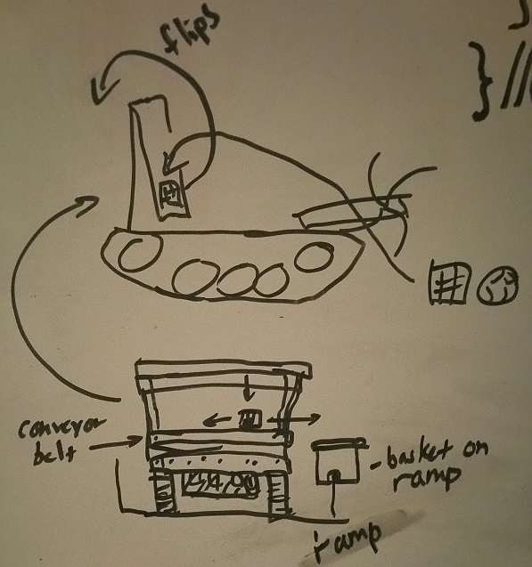

Since we have a semi-reliable form of going up the ramp (which we are working on to make closer to 100% efficiency), a priority for our team robot-wise is to establish an effective method of scoring blocks. We've designed a preliminary model with our old plastic trough that uses a conveyor belt made of fabric and foam sewn together that we tried to use before but decided not to. The foamy material proved perfect to drag the blocks. Basically the beater bar drives blocks into the trough, which flips up due to rubber bands and a servo.. The blocks drop into the bottom (before on the top since it hadn't been flipped) conveyor belt portion and turn another servo to move the belt to make the blocks head towards whichever side we wish to score in.
As we are aiming for the 80 points in hanging off the top bar, we wanted to ensure that we score as many points as possible to make our victory more assured. The conveyor belt, similar to our system from last year (except horizontal), gives us a continuous scoring mechanism as we ascend the ramp. We hope to test the utilization of both our conveyor belt and our (new) climber system before the new week begins and get some driver practice in before next Saturday. Our scoring system should help us win more games, especially with the hang and blocks in place.